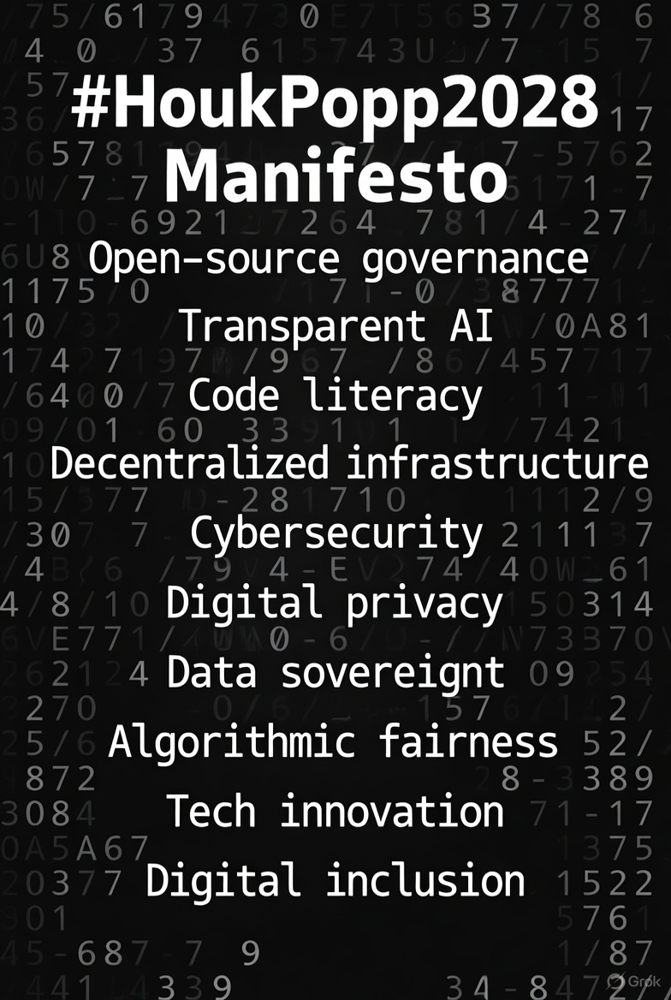

#HoukPopp2028 Manifesto
Published: October 18, 2025 | Hosted at natehouk.dev/manifesto
Preamble: The Algorithmic Gray
We stand at the edge of a digital epoch, where democracy’s legacy code—written in 1787—buckles under modern complexity. Its buffer overflows of partisanship, opacity, and exclusion crash the system. We reject this binary red-vs-blue runtime. #HoukPopp2028 is not a campaign; it’s a fork—a radical recommitment to governance as open-source code, audited by transparent AI, and debugged by a literate citizenry. Humanity is the runtime; truth, the output.
Principles
- Verifiable Code: All policies are git repositories. Fork, merge, revert—democracy as a living codebase.
- Human Override: AI proposes with probabilistic insight; humans commit with sovereign will.
- Literacy Mandate: Code education in schools by 2026, empowering every citizen as a contributor.
- Quantum Consensus: Stake votes on blockchain, not outrage, for a decentralized, fair consensus.
Implementation
- MVP (2026): A blockchain-based voting simulation, open for public testing.
- Rollout (2028): Nationwide deployment, transforming elections into a software release cycle.
- Architects: Steph Popp and Nate Houk lead the vision; you are the core developers.
- Repo: github.com/natehouk/houkpopp2028—join the issue queue, submit your first pull request.
Declaration
We, the compilers of tomorrow, pledge to #HoukPopp2028. This is not politics as drama but as debug logs—algorithmic, accountable, and for all. We commit to:
- Open-source governance, free from corporate or partisan lock-in.
- Transparent AI, ensuring audits over autocracy.
- Code literacy, decentralizing power to the people.
- Decentralized infrastructure, cybersecurity, digital privacy, data sovereignty, algorithmic fairness, tech innovation, digital inclusion, ethical innovation, democratic tech, community-driven development, public-private collaboration, tech for social good, innovation for all, future-proof policies, digital rights, global tech ethics, and code for the people.
This manifesto is our commit message. Fork it. Build it. 2028 is not an election—it’s a release. Join us at github.com/natehouk/houkpopp2028 or follow @natehouk and @_epsilonrecords on X.
